33 productos de Florería Andrea, Celaya, Guanajuato. Cada nombre y cada descripción se escribieron a partir del análisis de la fotografía real del arreglo, aplicando Véndele a la mente, no a la gente (Jürgen Klaric) y Vender como loco. Los precios mostrados ya incluyen el ajuste del 25 % sobre la lista original.
El punto de partida era una lista de WhatsApp: una foto y un precio. No había nombre comercial, ni descripción, ni ocasión de uso, así que cada cliente tenía que preguntar. La columna de la derecha es lo que hoy ve en la web, con el mismo producto y la misma foto.
| Producto | Como estaba en la lista | Nueva ficha — neuroventas |
|---|---|---|
001 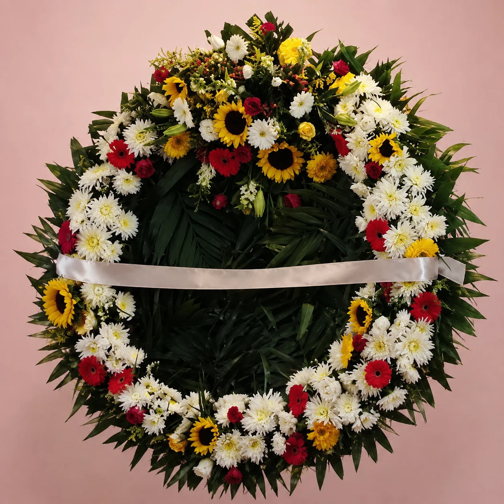 $2,500 foto2 | Corona grandePrecio de lista original: $2,000 MXN. Sin ficha, sin nombre comercial y sin descripción: el cliente tenía que preguntar por WhatsApp qué traía el arreglo. | Corona Grande Tradicional – Flor VariadaCorona grande de aro completo, montada sobre follaje de palma y hoja verde, con girasoles, gerberas rojas, crisantemos blancos y lirios repartidos en todo el contorno. Es la pieza que la familia ve al entrar y la que deja claro que alguien estuvo presente. Incluye listón con dedicatoria impresa y la llevamos directo a la funeraria, iglesia o panteón en Celaya. |
002 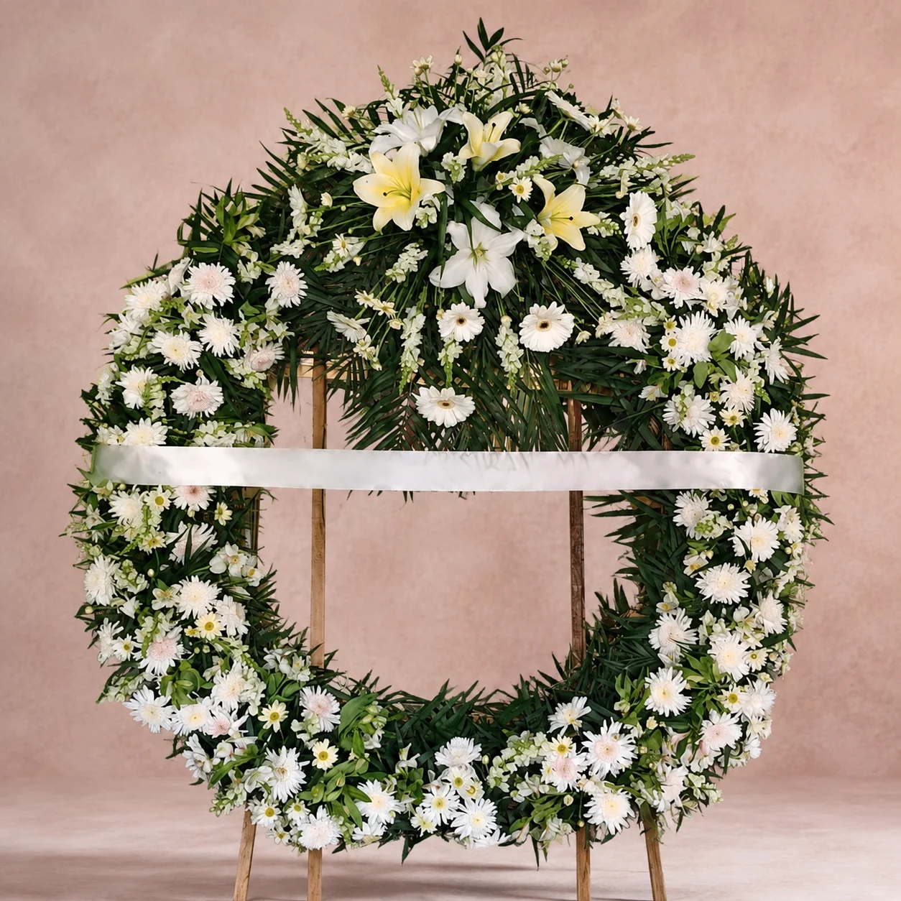 $2,500 foto3 | Corona grandePrecio de lista original: $2,000 MXN. Sin ficha, sin nombre comercial y sin descripción: el cliente tenía que preguntar por WhatsApp qué traía el arreglo. | Corona Grande Blanca – Lirios y CrisantemosCorona grande en tripié, toda en blanco: lirios abiertos en el copete, gerberas, crisantemos y nardo sobre base de follaje fino. El blanco completo es lo que se espera en una despedida formal y nunca queda fuera de lugar. Va con listón de dedicatoria y entrega coordinada en velorios y templos de Celaya. |
003 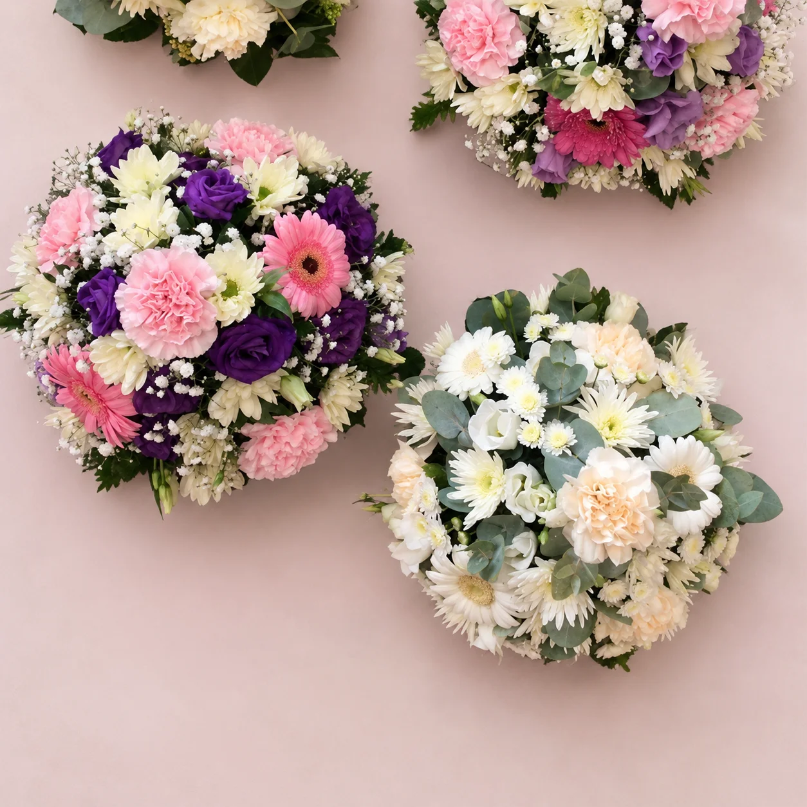 $225 foto4 | Centros de mesaPrecio de lista original: $180 MXN. Sin ficha, sin nombre comercial y sin descripción: el cliente tenía que preguntar por WhatsApp qué traía el arreglo. | Centros de Mesa para Evento – Precio por PiezaCentros de mesa redondos en tonos pastel, con claveles, gerberas, lisianthus, crisantemos y eucalipto, de altura baja para que los invitados se vean la cara de un lado a otro de la mesa. Los armamos en la combinación de color que lleve tu evento y en la cantidad que necesites. El precio es por pieza, así que puedes pedir desde diez para una comida hasta cincuenta para un salón completo. |
004 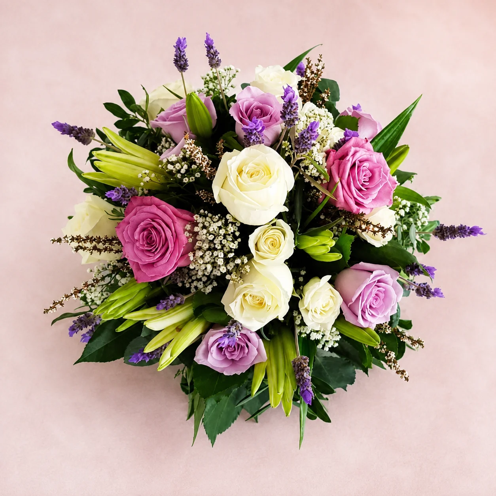 $250 foto5 | Centro de mesaPrecio de lista original: $200 MXN. Sin ficha, sin nombre comercial y sin descripción: el cliente tenía que preguntar por WhatsApp qué traía el arreglo. | Centro de Mesa de Rosas y LiriosCentro de mesa compacto con rosas rosas y blancas, lirios por abrir y espigas de statice morado entre follaje verde. Los lirios van en botón a propósito: abren durante el evento y siguen luciendo varios días después en casa. Perfecto para comidas, bautizos, primeras comuniones y mesas de honor. |
005 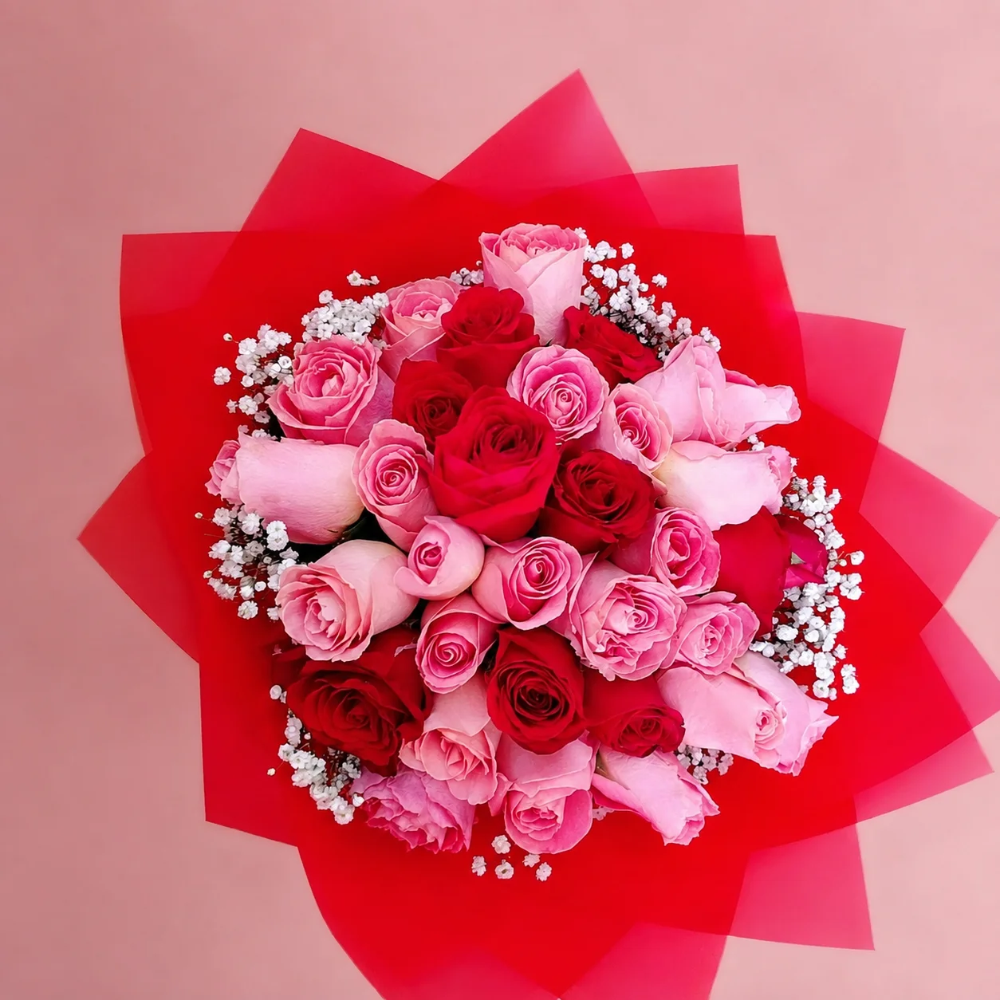 $750 foto6 | Ramo de 3 docenasPrecio de lista original: $600 MXN. Sin ficha, sin nombre comercial y sin descripción: el cliente tenía que preguntar por WhatsApp qué traía el arreglo. | Ramo de 3 Docenas de RosasTreinta y seis rosas entre rojas y rosas, acomodadas en domo cerrado con nubes de gypsophila y envoltura de papel rojo en capas. Tres docenas se sienten en las manos: es un ramo que hay que abrazar para cargarlo. Para aniversarios, pedidas de mano y esos días en que un detalle chico no alcanza. |
006 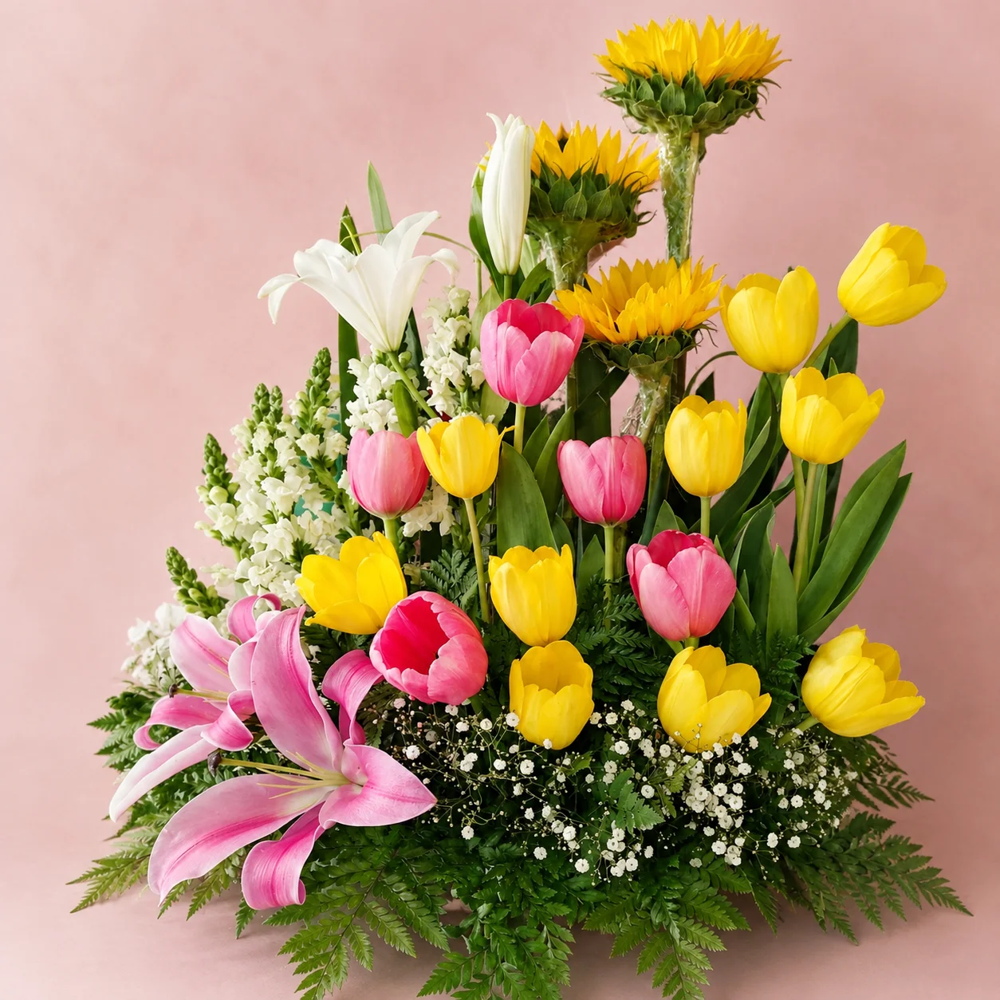 $2,250 foto7 | Arreglo de 15 tulipanes más flor variadaPrecio de lista original: $1,800 MXN. Sin ficha, sin nombre comercial y sin descripción: el cliente tenía que preguntar por WhatsApp qué traía el arreglo. | Arreglo de 15 Tulipanes con Flor VariadaQuince tulipanes amarillos y rosas montados en abanico, acompañados de girasoles, lirios orientales, nardo blanco y helecho sobre base baja. El tulipán es flor de importación y de temporada, así que este arreglo se pide con anticipación y se nota que no es de todos los días. Para cumpleaños importantes, Día de las Madres y regalos donde quieres salirte de lo común. |
007 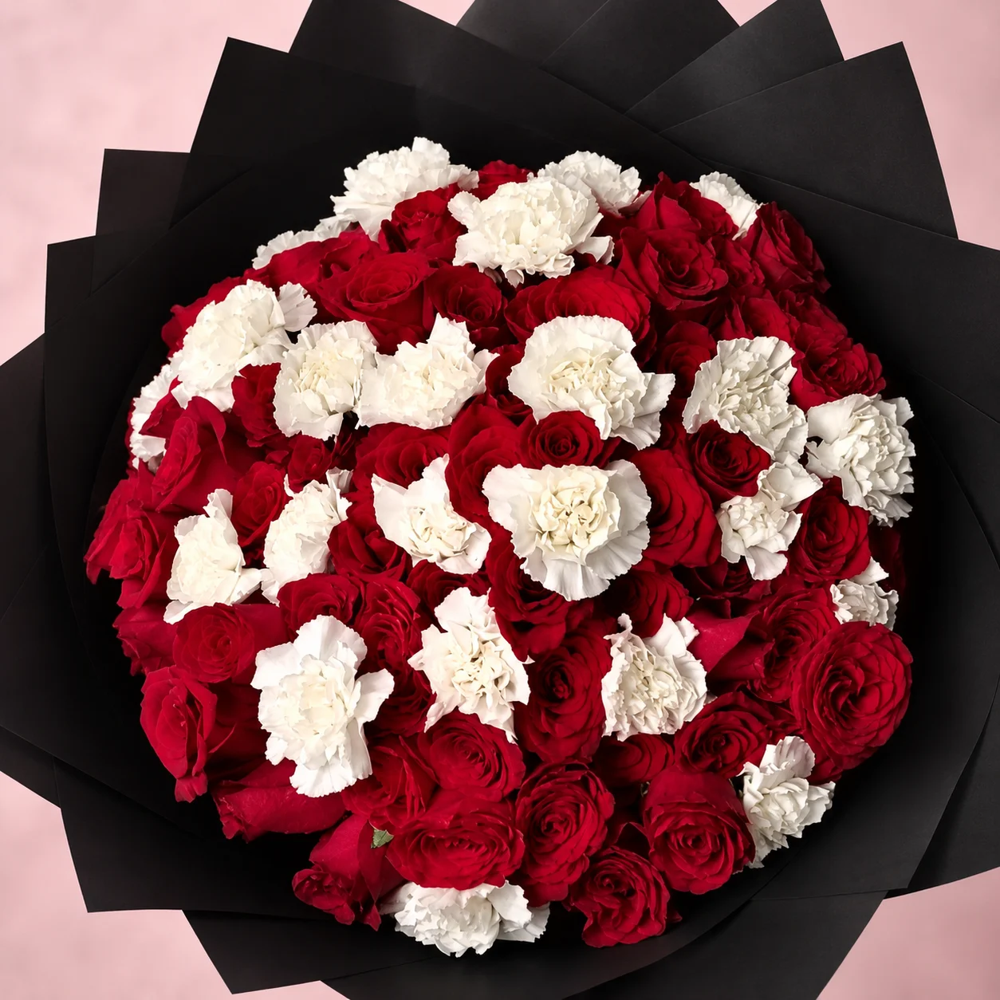 $2,000 foto8 | Ramo de 6 docenas de rosas y clavelesPrecio de lista original: $1,600 MXN. Sin ficha, sin nombre comercial y sin descripción: el cliente tenía que preguntar por WhatsApp qué traía el arreglo. | Ramo de 6 Docenas – Rosas Rojas y ClavelesSetenta y dos flores entre rosas rojas y claveles blancos, montadas al ras en un domo perfecto sobre papel negro mate. El contraste rojo y blanco sobre negro hace que se vea el doble de grande de lo que ya es. Este es el ramo de las declaraciones en serio, los aniversarios de años y las reconciliaciones que no admiten medias tintas. |
008 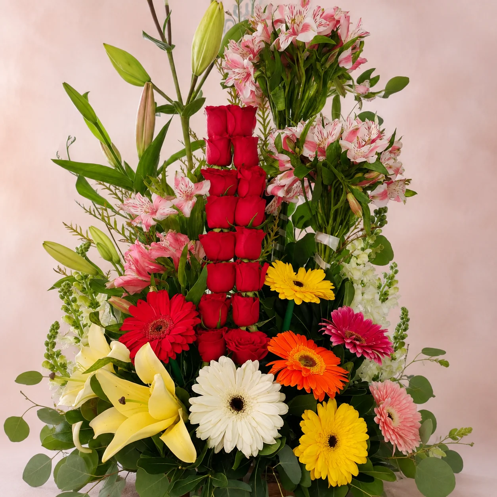 $1,000 foto9 | Arreglo para regalo flores variadasPrecio de lista original: $800 MXN. Sin ficha, sin nombre comercial y sin descripción: el cliente tenía que preguntar por WhatsApp qué traía el arreglo. | Arreglo para Regalo – Flores VariadasArreglo vertical con torre de rosas rojas al centro, gerberas de colores, lirios amarillos, alstroemerias rosas y nardo abriéndose hacia los lados. Llega listo en su base, sin florero ni trabajo extra para quien lo recibe. Funciona igual de bien en una recámara, en un mostrador o en el escritorio de la oficina. |
009 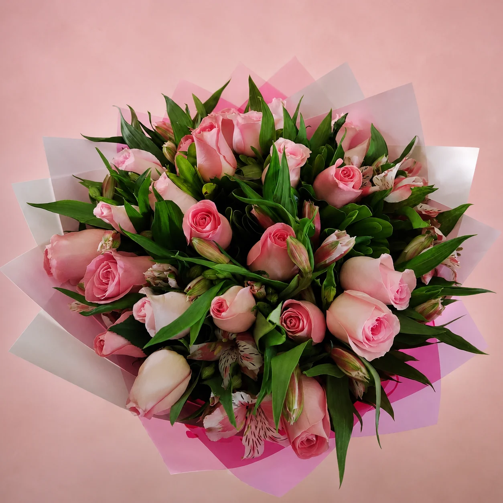 $625 foto10 | Ramo de dos docenas arregladasPrecio de lista original: $500 MXN. Sin ficha, sin nombre comercial y sin descripción: el cliente tenía que preguntar por WhatsApp qué traía el arreglo. | Ramo de Dos Docenas de Rosas RosadasVeinticuatro rosas rosas en punto de botón, intercaladas con alstroemerias y hoja verde, envueltas en papel rosa con velo blanco. Van cerradas a propósito para que abran en casa y le duren toda la semana. El regalo de siempre, bien hecho y sin sorpresas: cumpleaños, agradecimientos o un martes cualquiera. |
010 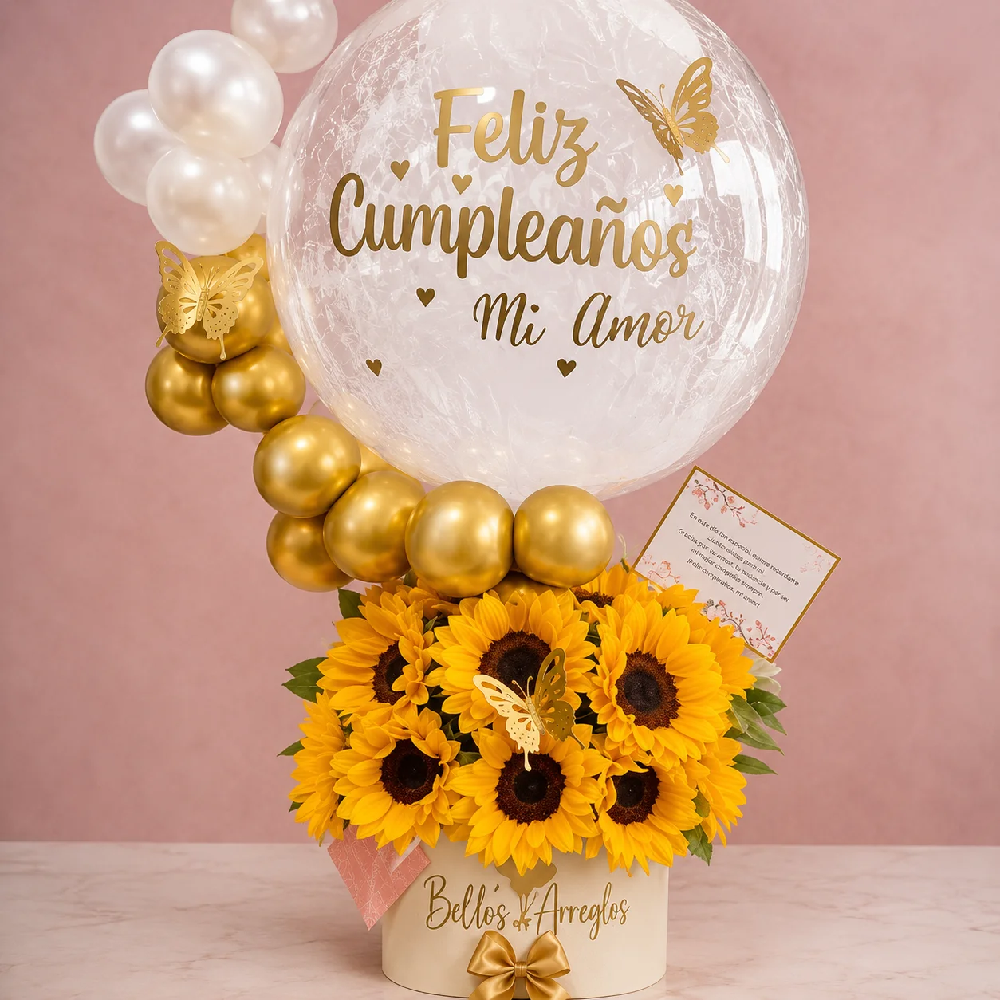 $1,625 foto11 | Caja de girasoles con globo grandePrecio de lista original: $1,300 MXN. Sin ficha, sin nombre comercial y sin descripción: el cliente tenía que preguntar por WhatsApp qué traía el arreglo. | Caja de Girasoles con Globo BurbujaCaja redonda forrada con girasoles al ras, coronada por un globo burbuja transparente con tu mensaje impreso en dorado y una guirnalda de globos dorados y blancos. Incluye tarjeta y mariposas decorativas. Es de esos regalos que la gente fotografía antes de tocarlos: cumpleaños, aniversarios y sorpresas que quieres que terminen en historias. |
011 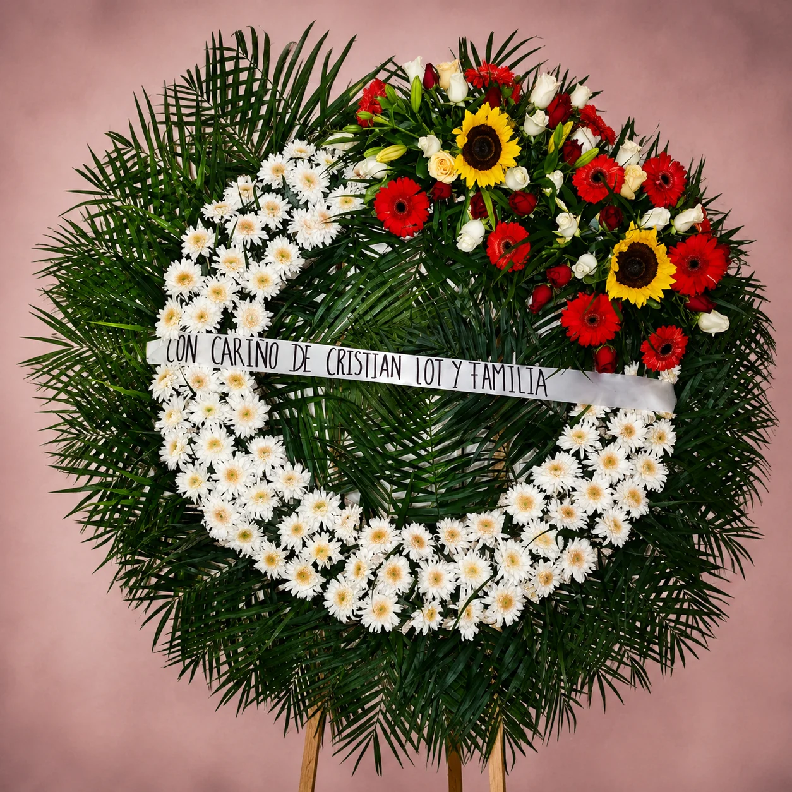 $2,500 foto12 | Corona grandePrecio de lista original: $2,000 MXN. Sin ficha, sin nombre comercial y sin descripción: el cliente tenía que preguntar por WhatsApp qué traía el arreglo. | Corona Grande con Listón de DedicatoriaCorona grande sobre follaje de palma, con media luna de crisantemos blancos y un copete de girasoles, gerberas rojas y rosas blancas en la esquina superior. El listón lleva escrito a mano el nombre de quien la envía, que es lo que la familia lee y recuerda. La entregamos montada en tripié en funerarias, capillas y panteones de Celaya y alrededores. |
012 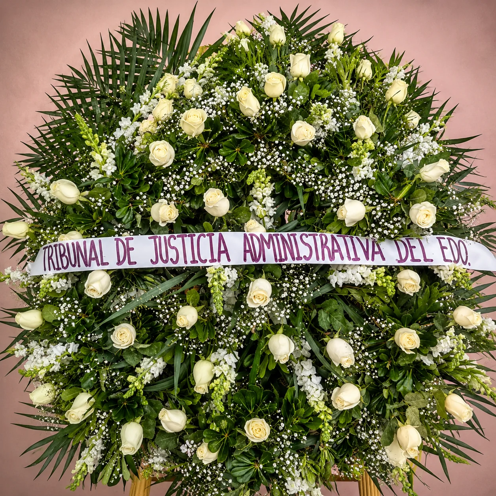 $2,500 foto13 | Corona mediana de puras rosasPrecio de lista original: $2,000 MXN. Sin ficha, sin nombre comercial y sin descripción: el cliente tenía que preguntar por WhatsApp qué traía el arreglo. | Corona de Puras Rosas BlancasCorona mediana armada exclusivamente con rosas blancas, distribuidas una por una sobre base de nube, nardo y follaje verde. Puras rosas es el nivel más formal que hay en corona: se usa para despedidas institucionales, empresariales y de gente muy querida. Incluye listón impreso con el nombre de la empresa, la dependencia o la familia que la envía. |
013 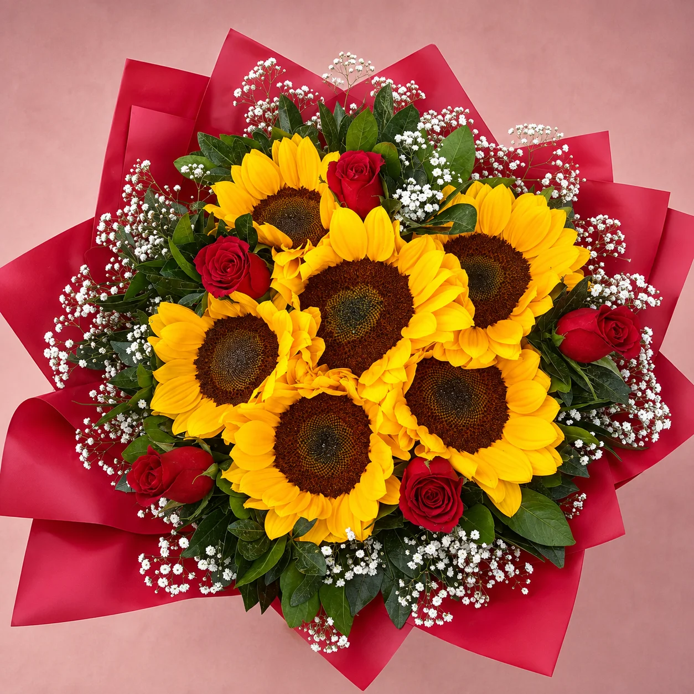 $750 foto14 | Ramo de girasoles con rosasPrecio de lista original: $600 MXN. Sin ficha, sin nombre comercial y sin descripción: el cliente tenía que preguntar por WhatsApp qué traía el arreglo. | Ramo de Girasoles con Rosas RojasSeis girasoles bien abiertos con rosas rojas asomando entre ellos, nube blanca y hoja verde, sobre papel rojo en capas amplias. El girasol trae la alegría y la rosa roja pone el mensaje: juntos dicen las dos cosas al mismo tiempo. Para cumpleaños, para pedir disculpas o para levantarle el ánimo a alguien que anda de bajón. |
014 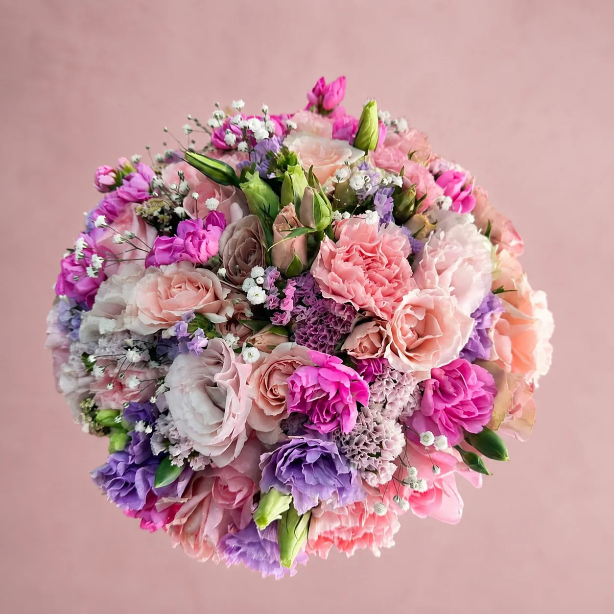 $750 foto15 | Ramo de 15 añosPrecio de lista original: $600 MXN. Sin ficha, sin nombre comercial y sin descripción: el cliente tenía que preguntar por WhatsApp qué traía el arreglo. | Ramo de XV Años – Tonos PastelRamo redondo en rosa, lila y palo de rosa, con rosas, claveles, lisianthus, statice y nube, montado al ras para que se vea parejo desde cualquier ángulo. Está pensado para las fotos de la quinceañera: liviano de cargar y del tamaño justo para que no le tape el vestido. También lo armamos en el color que lleve la fiesta. |
015 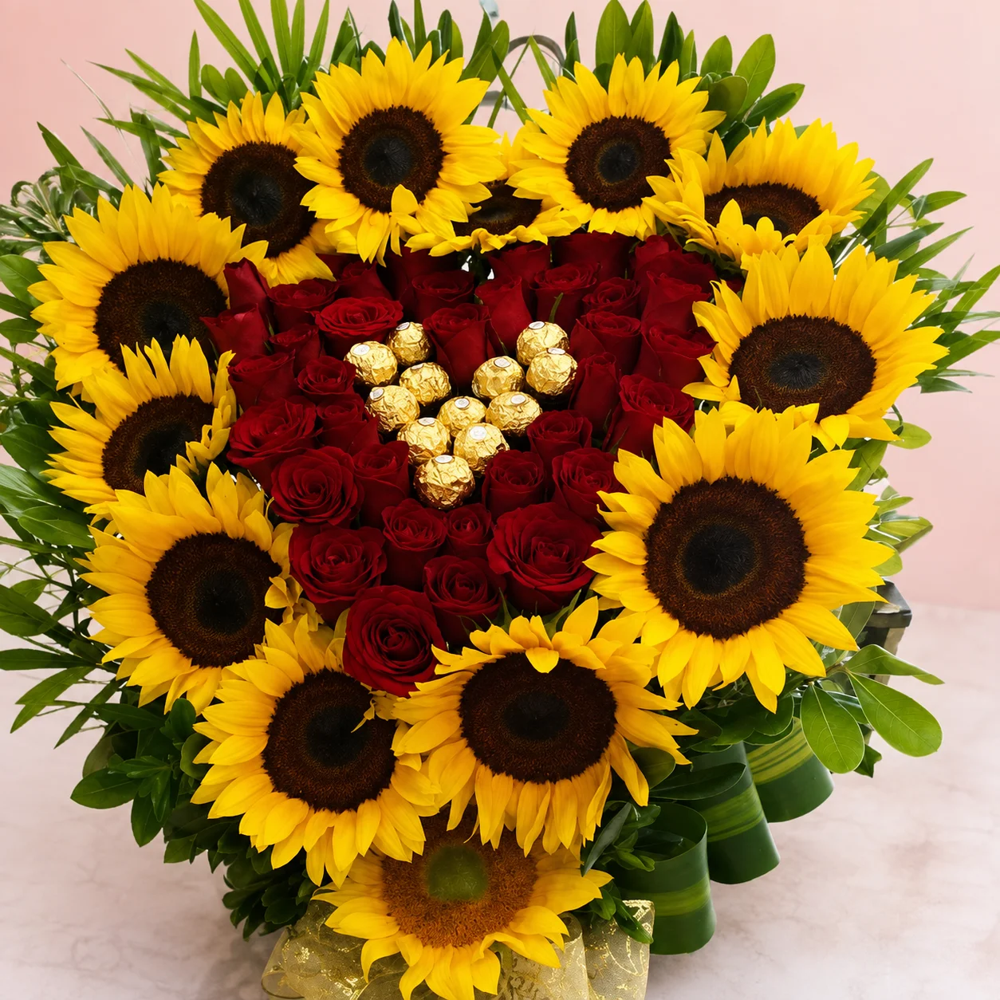 $2,813 foto16 | Ramo de 13 girasoles con 5 docenas de rosas y chocolatesPrecio de lista original: $2,250 MXN. Sin ficha, sin nombre comercial y sin descripción: el cliente tenía que preguntar por WhatsApp qué traía el arreglo. | Corazón de 13 Girasoles con 5 Docenas de Rosas y ChocolatesTrece girasoles enmarcando un corazón de sesenta rosas rojas, con chocolates Ferrero Rocher formando la inicial al centro. Es la pieza más vistosa del catálogo y no cabe en una mesa chica: hay que hacerle espacio. Para aniversarios, pedidas de mano y ese cumpleaños que quieres que se cuente durante años. |
016 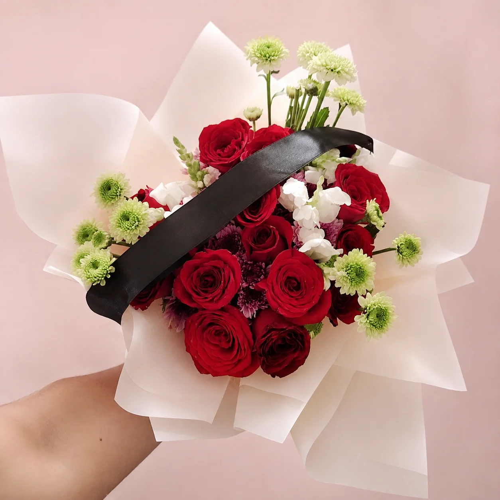 $375 foto17 | Ramo de rosasPrecio de lista original: $300 MXN. Sin ficha, sin nombre comercial y sin descripción: el cliente tenía que preguntar por WhatsApp qué traía el arreglo. | Ramo Compacto de Rosas Rojas y Pompón VerdeRamo pequeño de rosas rojas con pompón verde y nardo, envuelto en papel blanco satinado y cruzado por un listón negro. Es el detalle económico que no se ve económico: cabe en una mano y entra por cualquier puerta sin anunciarse. Ideal para una primera cita, un aniversario de mes o un gracias que quieres dar hoy mismo. |
017 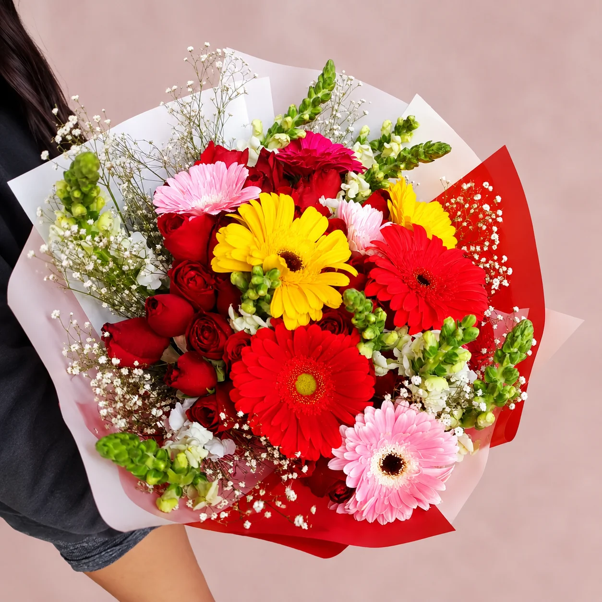 $750 foto18 | Ramo de gerberasPrecio de lista original: $600 MXN. Sin ficha, sin nombre comercial y sin descripción: el cliente tenía que preguntar por WhatsApp qué traía el arreglo. | Ramo de Gerberas de Colores con RosasGerberas amarillas, rojas y rosas de cabeza grande, con rosas rojas, nardo blanco y nube, en envoltura blanca con filo rojo. La gerbera es la flor más alegre que existe y aquí van seis o siete abiertas de par en par. Para cumpleaños, para una amiga o para cualquier excusa buena de celebrar. |
018 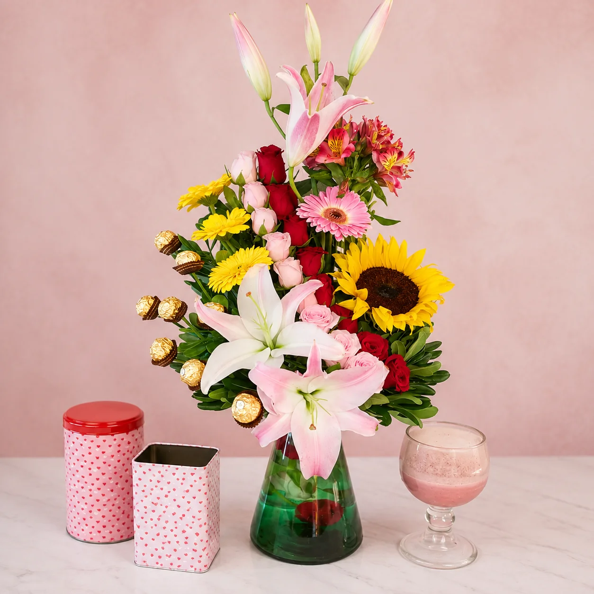 $1,125 foto19 | Arreglo base cristal y chocolatesPrecio de lista original: $900 MXN. Sin ficha, sin nombre comercial y sin descripción: el cliente tenía que preguntar por WhatsApp qué traía el arreglo. | Arreglo en Base de Cristal con ChocolatesArreglo vertical en florero de cristal con lirios rosas, girasol, gerbera, rosas rojas y margaritas amarillas, acompañado de dos latas decoradas con chocolates Ferrero Rocher. El florero se queda de recuerdo y los chocolates se acaban el mismo día: doble regalo en un solo envío. Para cumpleaños, San Valentín y detalles con los que quieres quedar bien. |
019 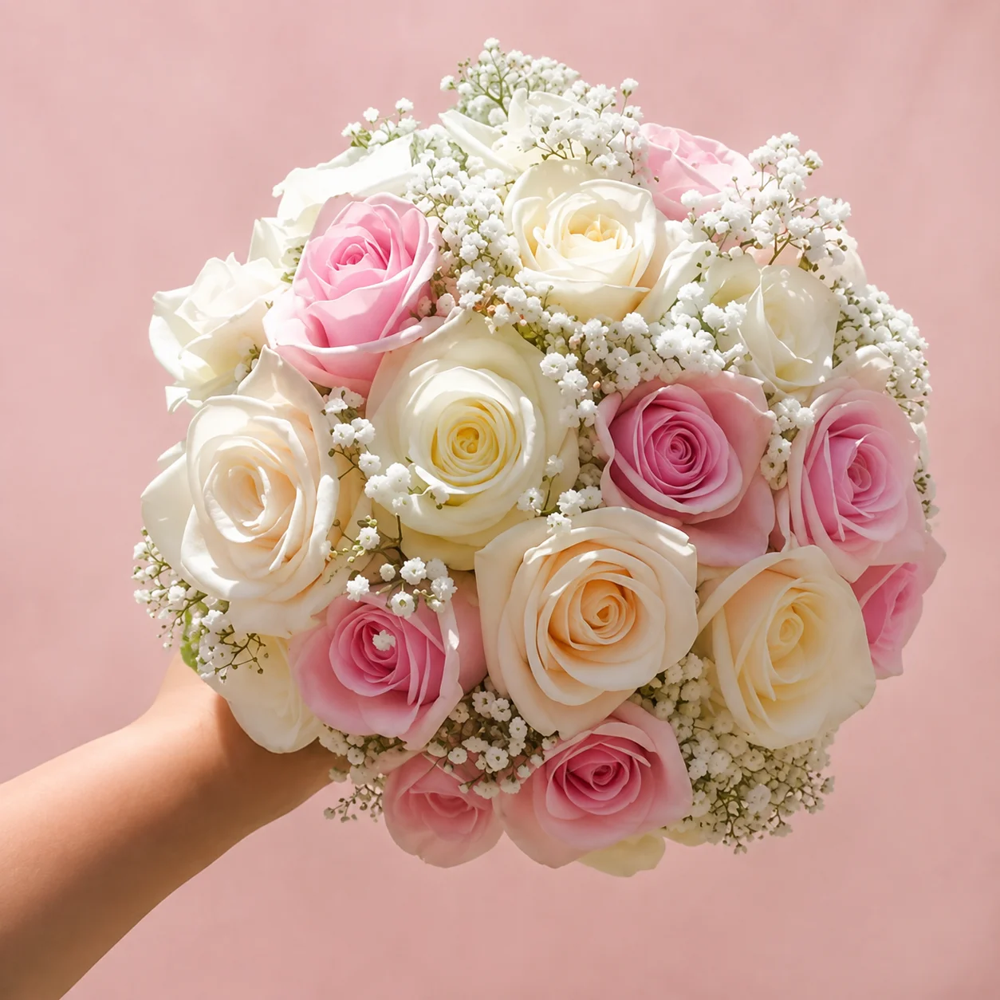 $625 foto20 | Ramo de XV rosas y gypsophilaPrecio de lista original: $500 MXN. Sin ficha, sin nombre comercial y sin descripción: el cliente tenía que preguntar por WhatsApp qué traía el arreglo. | Ramo de XV Años – Rosas y GypsophilaQuince rosas en blanco, palo de rosa y rosa fuerte, montadas en domo cerrado sobre una nube densa de gypsophila, con el mango forrado en listón blanco. Es el ramo clásico de quinceañera y también el que más piden las novias de boda civil. Ligero de sostener y hecho para que se vea impecable en cada foto. |
020 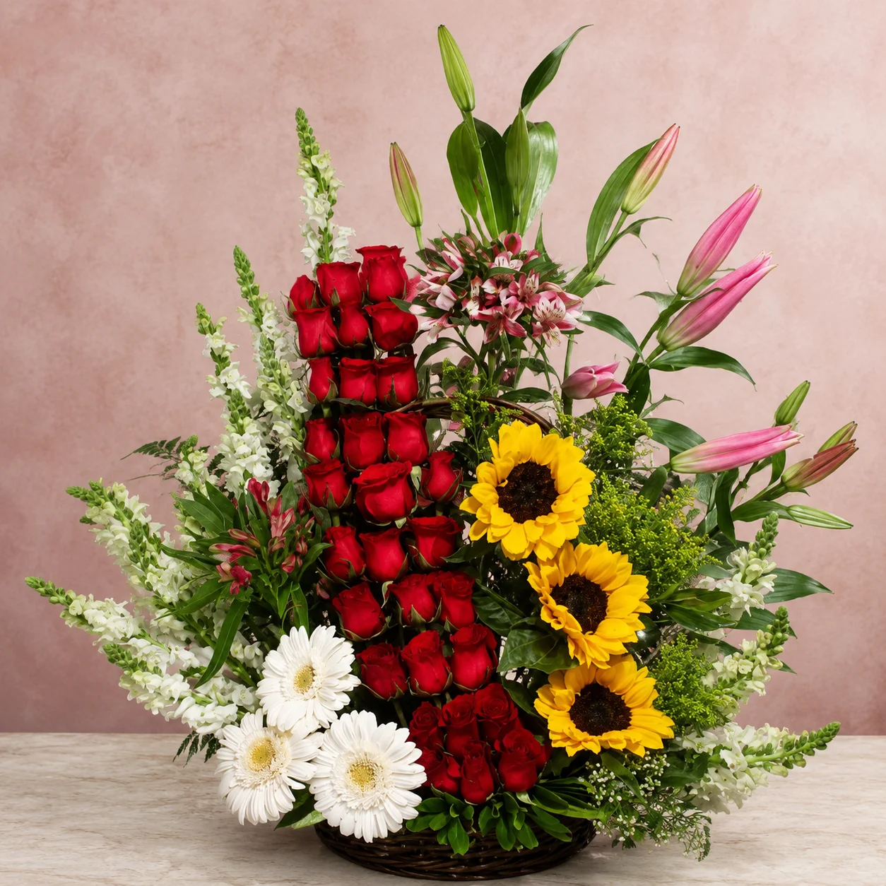 $1,250 foto21 | Arreglo en canastaPrecio de lista original: $1,000 MXN. Sin ficha, sin nombre comercial y sin descripción: el cliente tenía que preguntar por WhatsApp qué traía el arreglo. | Arreglo en Canasta – Rosas, Girasoles y LiriosCanasta de mimbre con torre de rosas rojas al centro, girasoles a un costado, lirios rosas por abrir, gerberas blancas y nardo abriéndose en abanico. Los lirios van en botón y siguen abriendo durante toda la semana, así que el arreglo cambia solo. Para cumpleaños, aniversarios de empresa y regalos que quieres que se vean de lejos. |
021 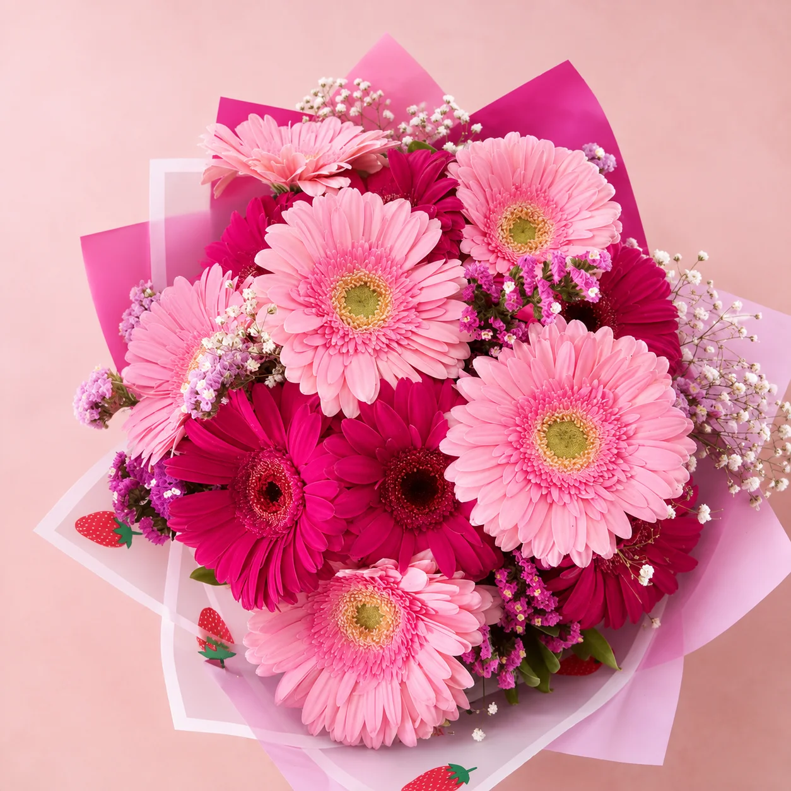 $375 foto22 | Ramo de gerberasPrecio de lista original: $300 MXN. Sin ficha, sin nombre comercial y sin descripción: el cliente tenía que preguntar por WhatsApp qué traía el arreglo. | Ramo de Gerberas Rosas y FucsiaRamo de gerberas en rosa claro y fucsia, con statice, nube y hoja verde, en envoltura blanca con papel fucsia y detalles de fresas. Toda la flor va abierta y de frente: no necesita nada más para llamar la atención. El detalle perfecto para un cumpleaños, para el Día de las Madres o para alegrarle el día a alguien sin gastar de más. |
022 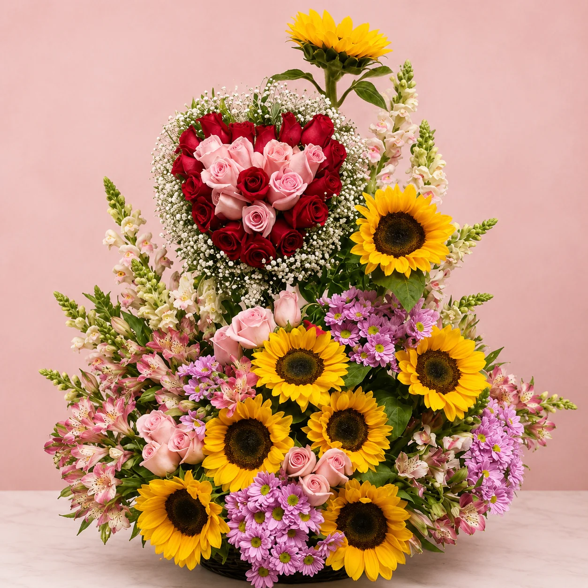 $2,500 foto23 | Arreglo grande con girasoles y corazónPrecio de lista original: $2,000 MXN. Sin ficha, sin nombre comercial y sin descripción: el cliente tenía que preguntar por WhatsApp qué traía el arreglo. | Arreglo Grande con Girasoles y Corazón de RosasArreglo de dos pisos: base amplia de girasoles, margaritas lilas, alstroemerias y nardo, coronada por un corazón de rosas rojas y rosas montado en alto sobre una nube blanca. Mide más de un metro y hay que entregarlo entre dos personas. Para aniversarios grandes, pedidas de mano y sorpresas que quieres que se vean desde la calle. |
023 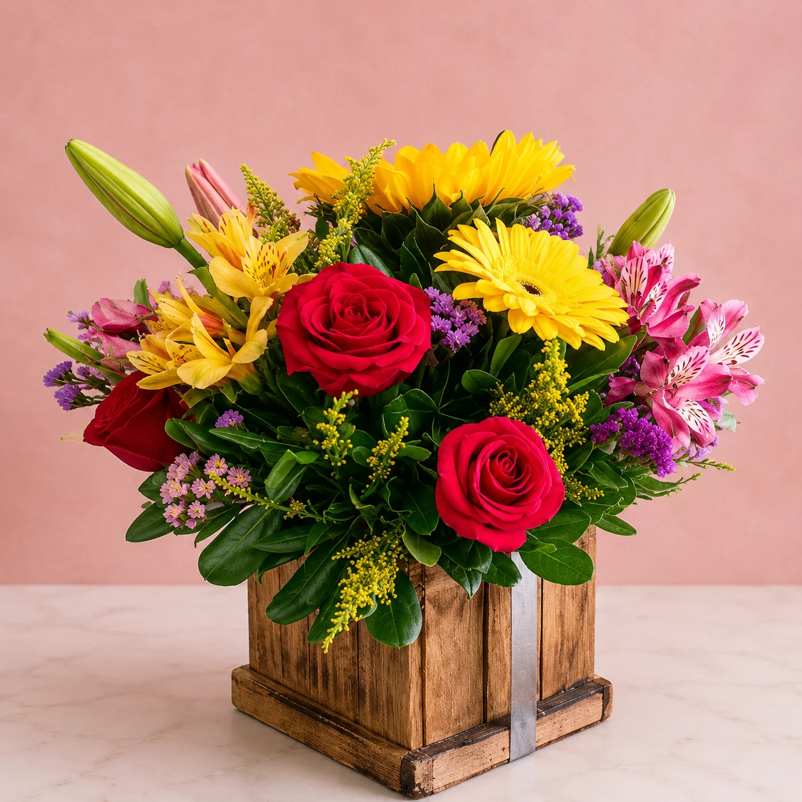 $563 foto24 | Caja para regaloPrecio de lista original: $450 MXN. Sin ficha, sin nombre comercial y sin descripción: el cliente tenía que preguntar por WhatsApp qué traía el arreglo. | Caja de Madera para RegaloCajón de madera rústica con rosas rojas, gerberas amarillas, alstroemerias, lirios por abrir y statice morado, todo montado en oasis para que no necesite florero. Llega listo para poner sobre una mesa o un escritorio y se sostiene solo durante días. Para cumpleaños, agradecimientos y detalles de oficina. |
024 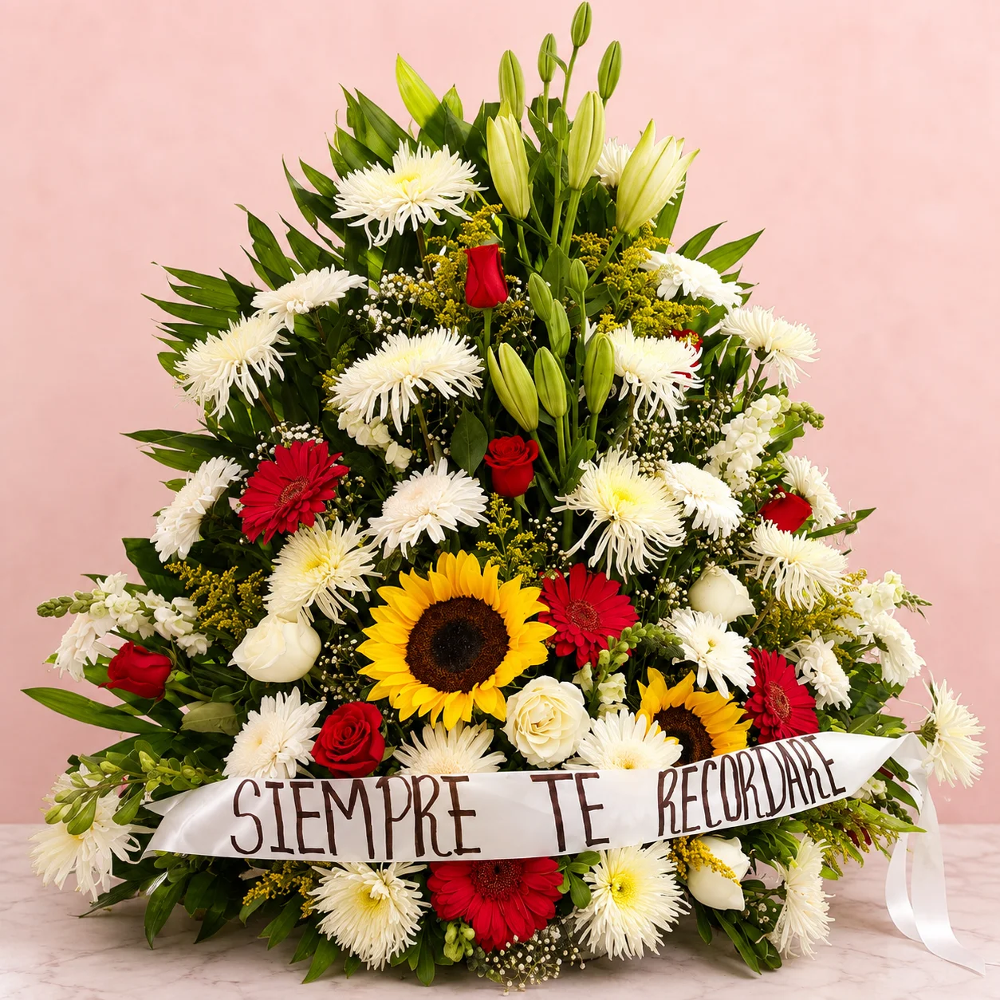 $625 foto25 | Arreglo grande funeralPrecio de lista original: $500 MXN. Sin ficha, sin nombre comercial y sin descripción: el cliente tenía que preguntar por WhatsApp qué traía el arreglo. | Arreglo Funeral con Listón DedicadoArreglo funeral en forma de domo con crisantemos blancos, lirios, gerberas rojas, rosas y un girasol al centro, cruzado por un listón con la frase que tú elijas escrita a mano. Es la opción cuando quieres estar presente sin llegar al tamaño ni al costo de una corona. Lo llevamos el mismo día a funerarias, capillas y domicilios de Celaya. |
025 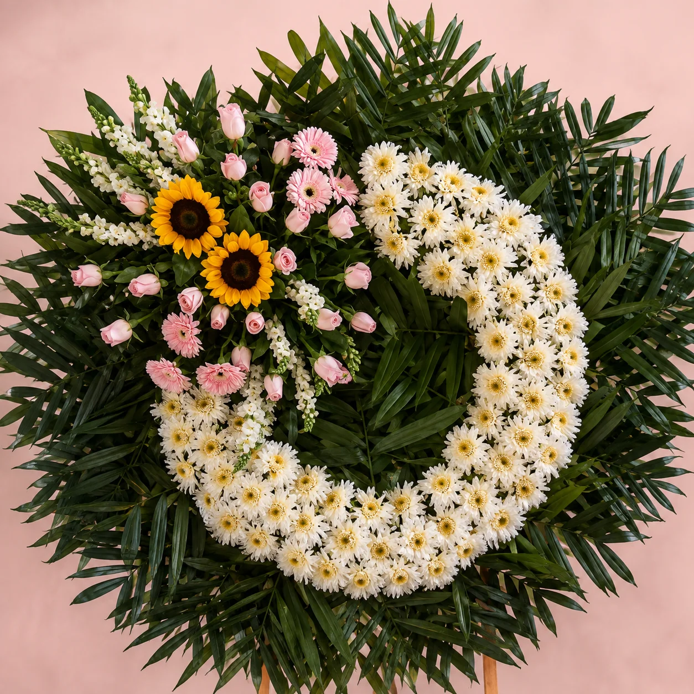 $2,250 foto26 | Corona medianaPrecio de lista original: $1,800 MXN. Sin ficha, sin nombre comercial y sin descripción: el cliente tenía que preguntar por WhatsApp qué traía el arreglo. | Corona Mediana con Girasoles y RosasCorona mediana sobre palma, con media luna de crisantemos blancos y un copete de girasoles, gerberas rosas, rosas y nardo. Los girasoles le quitan la solemnidad pesada y la vuelven una despedida más cálida, muy pedida para mamás y abuelas. Va montada en tripié, con listón impreso y entrega coordinada donde se esté velando. |
026 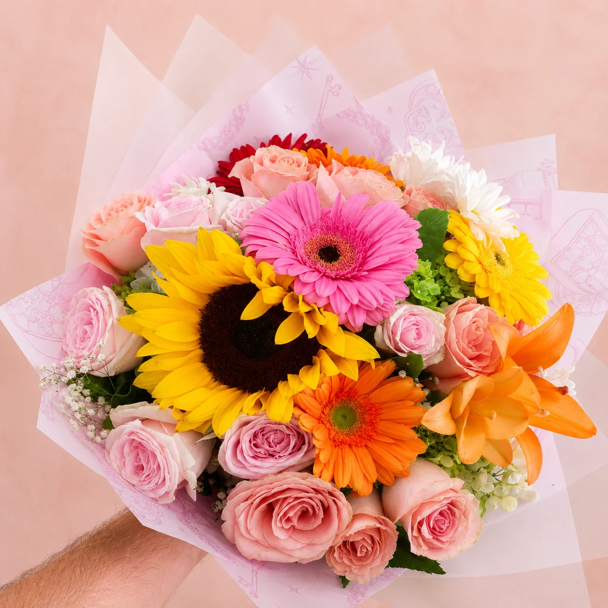 $750 foto27 | Ramo colores pasteles flor variadaPrecio de lista original: $600 MXN. Sin ficha, sin nombre comercial y sin descripción: el cliente tenía que preguntar por WhatsApp qué traía el arreglo. | Ramo en Colores Pastel – Flor VariadaRamo variado en tonos suaves: girasol al centro, gerberas rosa y naranja, rosas de spray, lirios naranjas y hortensia verde, en papel rosa con estampado. No hay dos iguales, porque lo armamos con lo mejor que llegó ese día al mercado. Para cumpleaños, para el Día de las Madres o para alguien que aprecia lo bonito sin estridencias. |
027 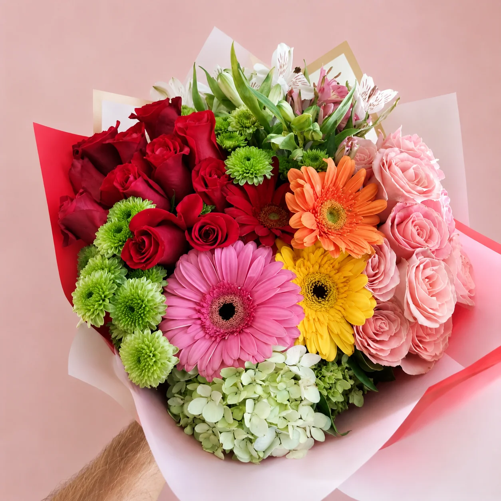 $1,000 foto28 | Ramo de flor variadaPrecio de lista original: $800 MXN. Sin ficha, sin nombre comercial y sin descripción: el cliente tenía que preguntar por WhatsApp qué traía el arreglo. | Ramo Premium de Flor Variada con HortensiaRamo de gran volumen con rosas rojas, rosas de spray en palo de rosa, gerberas fucsia y naranja, pompón verde, alstroemerias y una hortensia verde completa en la base. La hortensia es la flor cara del ramo y se nota: le da un peso visual que las demás no alcanzan. Para regalos importantes, cumpleaños de alguien especial y gestos de agradecimiento serios. |
028 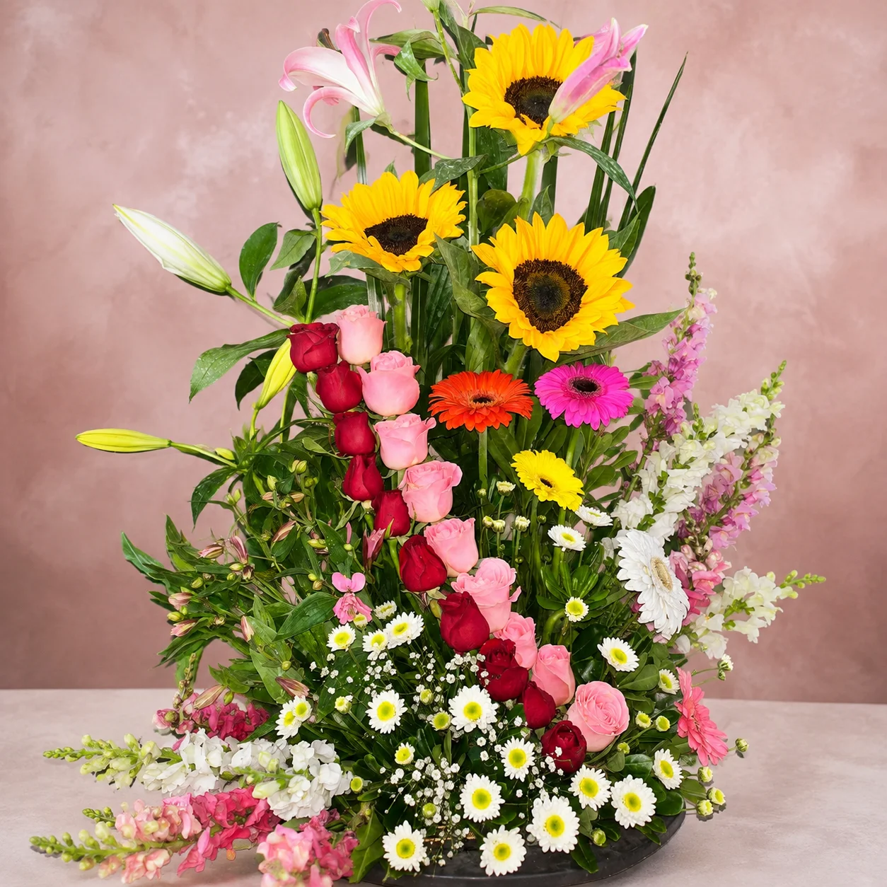 $1,875 foto29 | Arreglo alto de flor variadaPrecio de lista original: $1,500 MXN. Sin ficha, sin nombre comercial y sin descripción: el cliente tenía que preguntar por WhatsApp qué traía el arreglo. | Arreglo Alto de Rosas, Girasoles y LiriosArreglo montado en altura con una cascada de rosas rojas y rosas bajando por el centro, girasoles arriba, lirios orientales por abrir, gerberas y margaritas blancas en la base. Sobrepasa los ochenta centímetros y domina cualquier espacio donde lo dejen. Para inauguraciones, aniversarios de empresa, cumpleaños grandes y homenajes. |
029 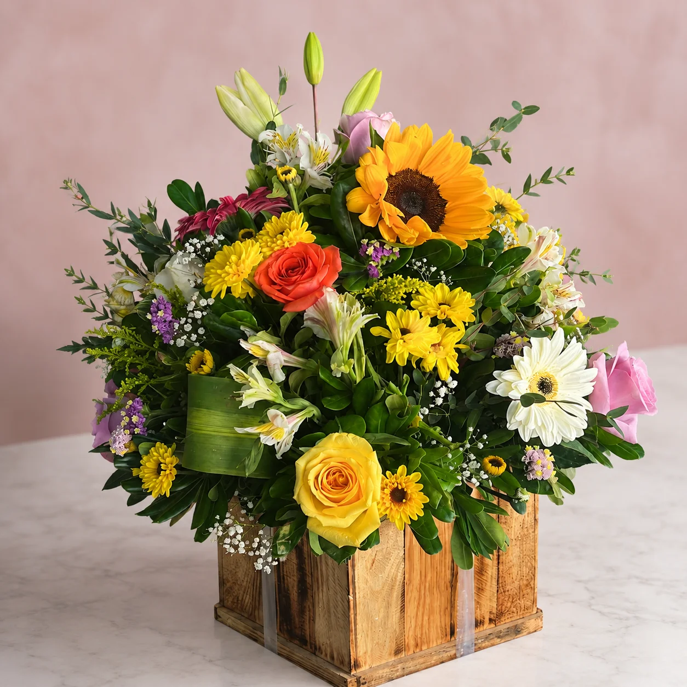 $1,500 foto30 | Caja grandePrecio de lista original: $1,200 MXN. Sin ficha, sin nombre comercial y sin descripción: el cliente tenía que preguntar por WhatsApp qué traía el arreglo. | Caja Grande de Madera con Flor VariadaCajón grande de madera con girasol, rosas naranjas y amarillas, lirios blancos por abrir, alstroemerias, margaritas y eucalipto, todo montado en oasis con un lazo de hoja verde. Es la versión grande del cajón: llena una mesa de centro completa. Para cumpleaños, agradecimientos formales y regalos de empresa a empresa. |
030 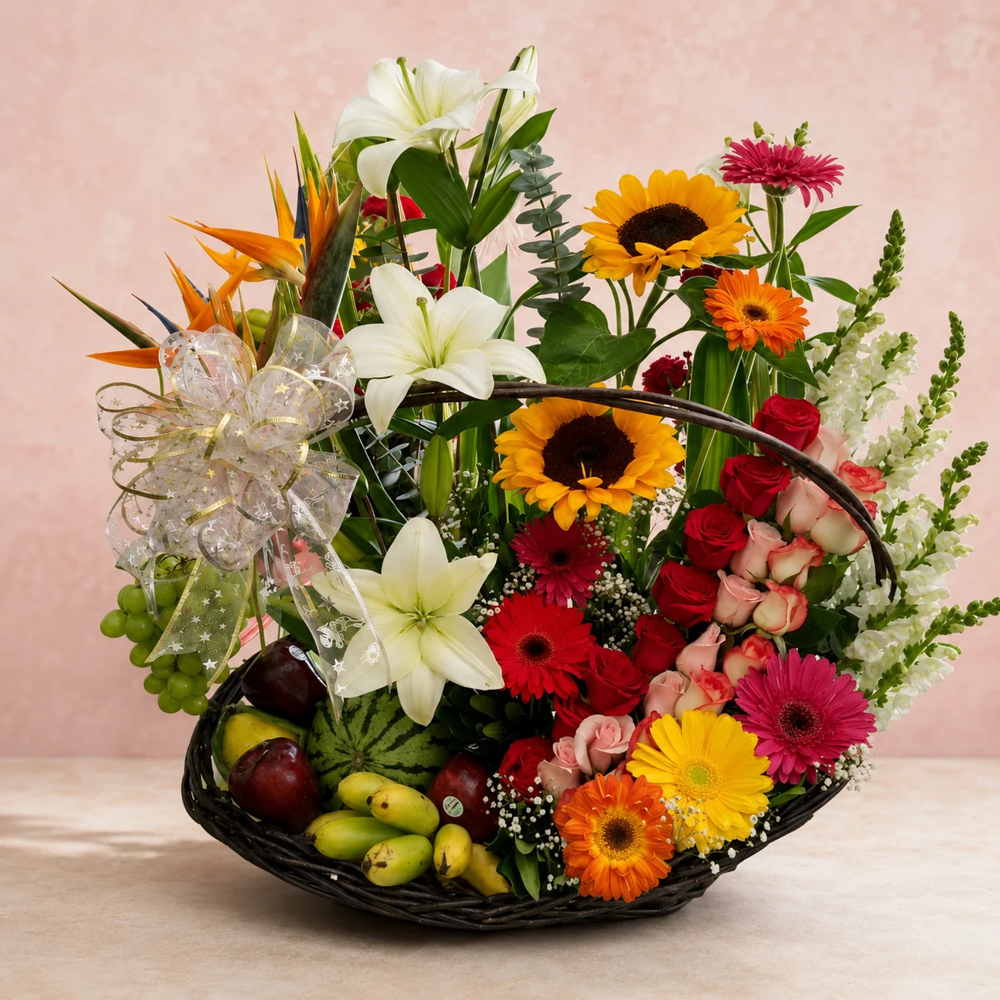 $2,500 foto31 | Canasta grande frutalPrecio de lista original: $2,000 MXN. Sin ficha, sin nombre comercial y sin descripción: el cliente tenía que preguntar por WhatsApp qué traía el arreglo. | Canasta Grande Frutal con FloresCanasta grande de mimbre con base de fruta de temporada —manzana, plátano, uva, sandía— y una montaña de flores encima: aves del paraíso, lirios blancos, girasoles, gerberas de colores, rosas y nardo, con moño de organza. Es el regalo que se lleva a un hospital, a una convalecencia o a una casa donde hay que quedar bien con toda la familia. Se come y se disfruta a la vista al mismo tiempo. |
031 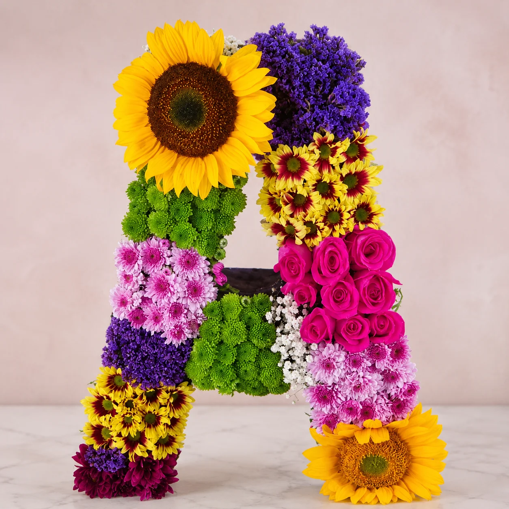 $1,875 foto32 | Diseños de letras floralesPrecio de lista original: $1,500 MXN. Sin ficha, sin nombre comercial y sin descripción: el cliente tenía que preguntar por WhatsApp qué traía el arreglo. | Letras Florales PersonalizadasLetras e iniciales armadas flor por flor sobre estructura, combinando girasoles, rosas fucsia, pompón verde, margaritas y statice morado. Hacemos la inicial del festejado, un número o una palabra corta, en los colores que traiga tu evento. El precio es por letra e ideal para cumpleaños, XV años, bodas y mesas de bienvenida. |
032 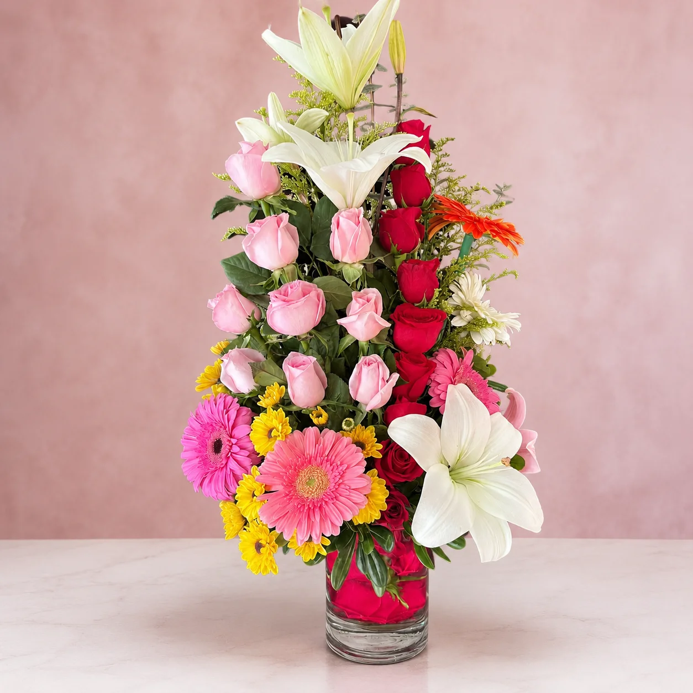 $1,000 foto33 | Arreglo base cristalPrecio de lista original: $800 MXN. Sin ficha, sin nombre comercial y sin descripción: el cliente tenía que preguntar por WhatsApp qué traía el arreglo. | Arreglo en Base de Cristal con Rosas y LiriosFlorero de cristal con torre de rosas rosas y rojas subiendo por el centro, lirios blancos abiertos a los lados, gerberas rosas y margaritas amarillas en la base. El cristal deja ver los tallos y el agua, así que se ve limpio desde cualquier ángulo. Para recámaras, recepciones, consultorios y regalos que se quedan a la vista mucho tiempo. |
033 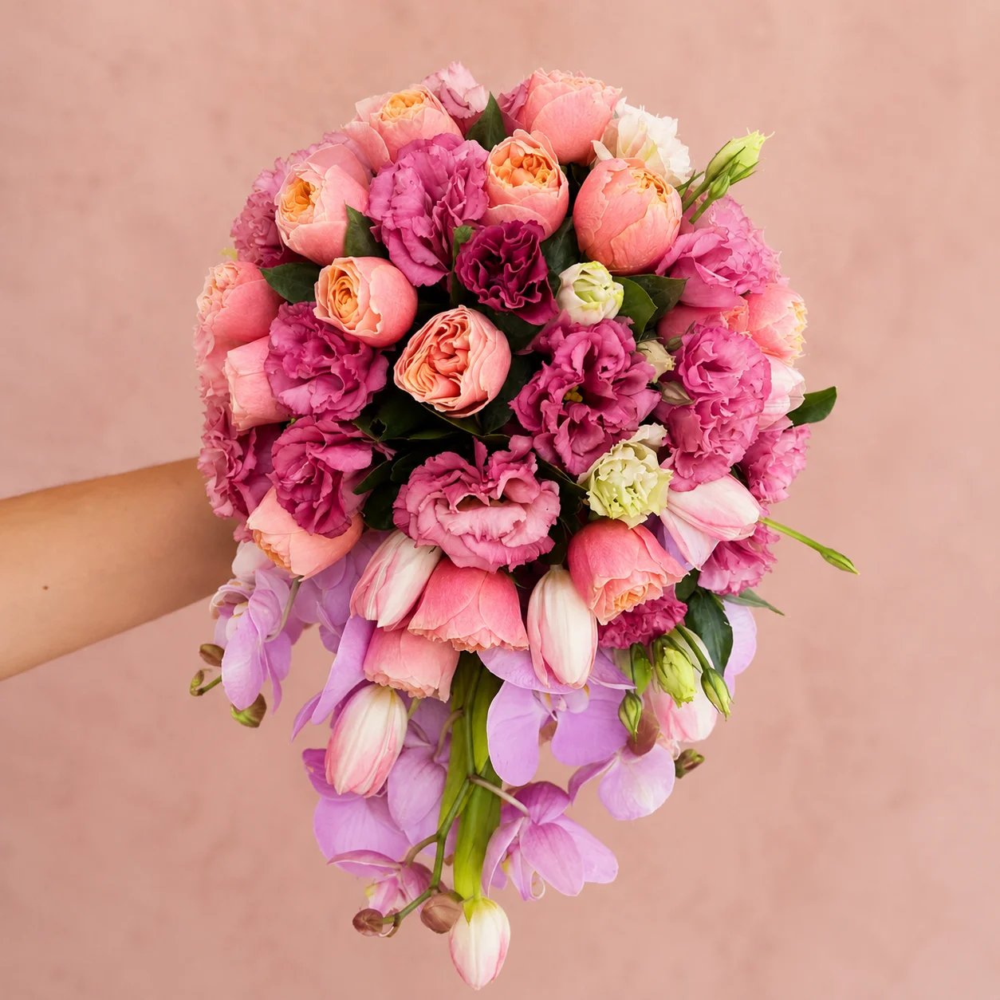 $2,875 foto34 | Ramo de boda con caída de orquídeas y peoníasPrecio de lista original: $2,300 MXN. Sin ficha, sin nombre comercial y sin descripción: el cliente tenía que preguntar por WhatsApp qué traía el arreglo. | Ramo de Novia con Caída de Orquídeas y PeoníasRamo de novia en cascada con peonías en coral y fucsia, lisianthus doble y una caída de orquídeas dendrobium lila que baja casi medio metro. Es flor de importación y se arma el mismo día de la boda, por eso se aparta con anticipación. Para novias que ya vieron todo en internet y quieren el ramo que nadie más va a llevar. |
Los 33 precios provienen de la lista del negocio y se les aplicó un incremento del 25 % exacto, sin redondeo. Dos importes quedaron con centavos y se subieron al peso más cercano: $2,812.50 → $2,813 y $562.50 → $563. Todos los valores están en pesos mexicanos.